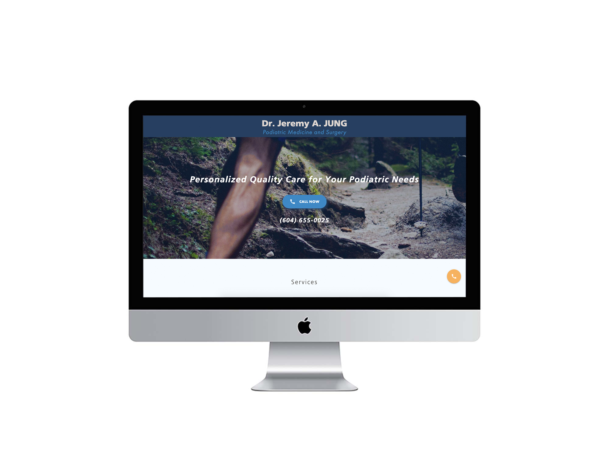
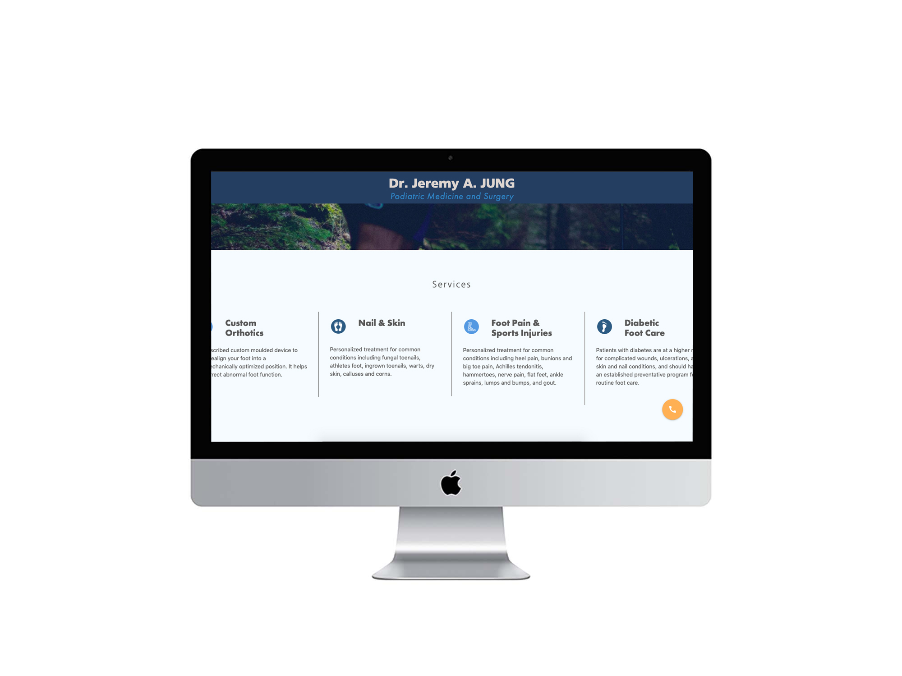
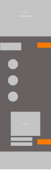
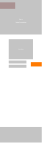

Dr. Jeremy A. JUNG
Podiatric Medicine and Surgery
Built with Materialize CSS Framework
Dr. Jeremy Jung is a highly trained Foot and Ankle Surgeon with experience treating a wide variety of foot and ankle conditions. He completed his undergraduate degree in Kinesiology and Health Sciences locally from the University of British Columbia. Having moved away to pursue his doctorate in podiatrics, his recent return to Vancouver defines the start of his private practice.
Grow Dr. Jeremy Jung's newly established podiatric business.
To promote his practice we needed to establish a digital identity for the business.
We accomplished this by building a simple site that gives attention to his purpose, credentials,
services, and business operations.
A website acts as the broadest touchpoint for a business that has a diverse target market.




First Iterations of Low-Fi Mockups (mobile)
This is a more simplified version of the above mockups that I decided to continue with.
Considering the intent of a search for podiatrics is quite specific, a condensed website with
prominent call to actions would suit the purpose of the website.

A significant amount of content had already been established on the website about the business,
services, credentials, and locations. However, the amount of information presented on each page was
overwhelming.
I revised the landing page to one that focused on conversion.
By compiling a portion of information from each page on to the landing page, the initial narrative
becomes easier to consume and more compelling to act on.